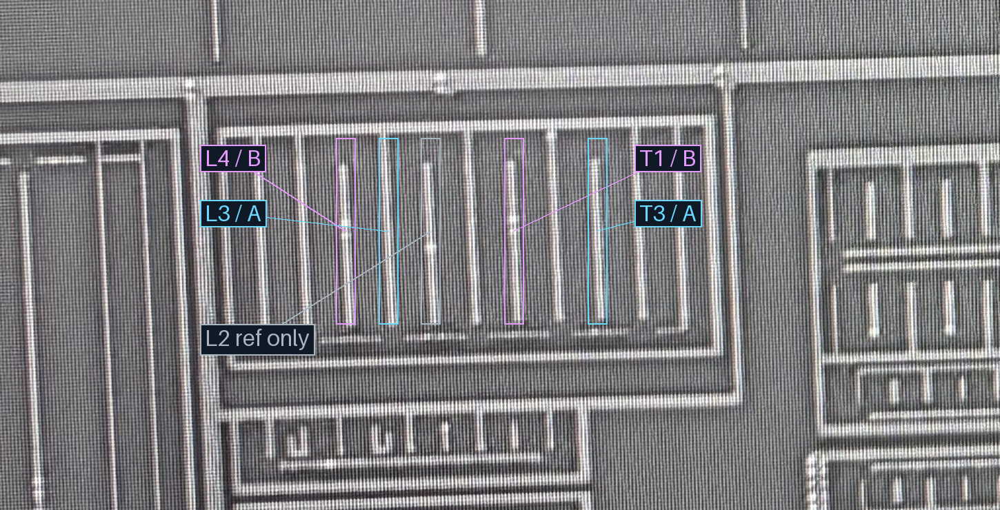
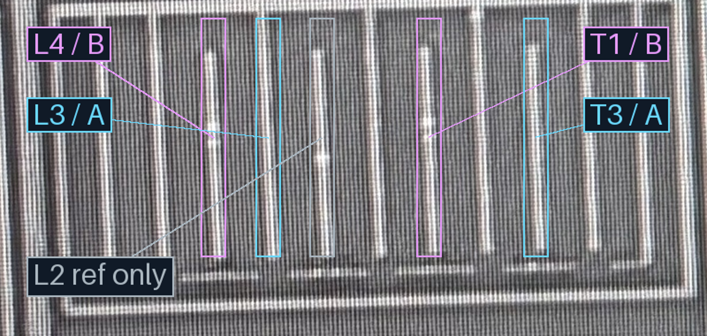

M2宽上下文

| 组 | 本处M1成员 | M2锚点 | 路径信息 |
|---|---|---|---|
| B | T1、L4 | B | 经M2／M3，具体孔位和M3编号未定 |
| A | T3、L3 | A | 经M2／M3，具体孔位和M3编号未定 |
新图把L3显式标出：它位于L4与旧L2之间。灰色L2只作参照，本轮未将它并入A组；也不据此证明它全局不接A。颜色框表示分组成员，不表示M1同层直接相连。
旧版的123／121／121等距描述属于L4、L2、T1、T3，不能用于新版L3成员。当前四个原生定位为x≈1000／1062／1244／1365，相邻间距62／182／121；这是需要继续核对dummy、器件和条带身份的差异。按用户指定保留L3，不能为迎合ABAB自动改回L2或移动几何。ABAB器件布局背景与原生M1条带索引分开保存。
H1→V1→A、H2→V1→B及本处与U1/U2隔离不重审。35条已审原子接口保留；本轮新增2项分组决策，不冒充新增若干V1/V2接口。M3-X/Y仍只是候选定位，不能把本轮分组视为已确认X/Y承载。




仅M1标记副本更新；M2/M3沿用原图。无跨层投影、新孔形或自动网表边，未实测浏览器交互。